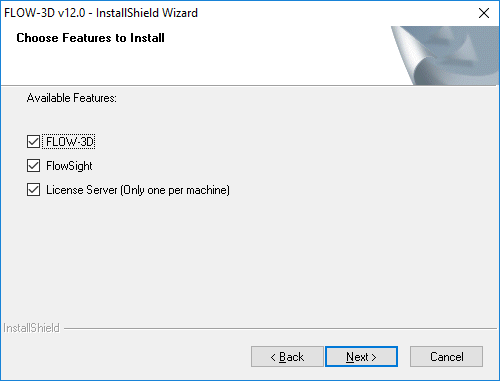
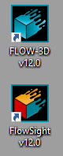
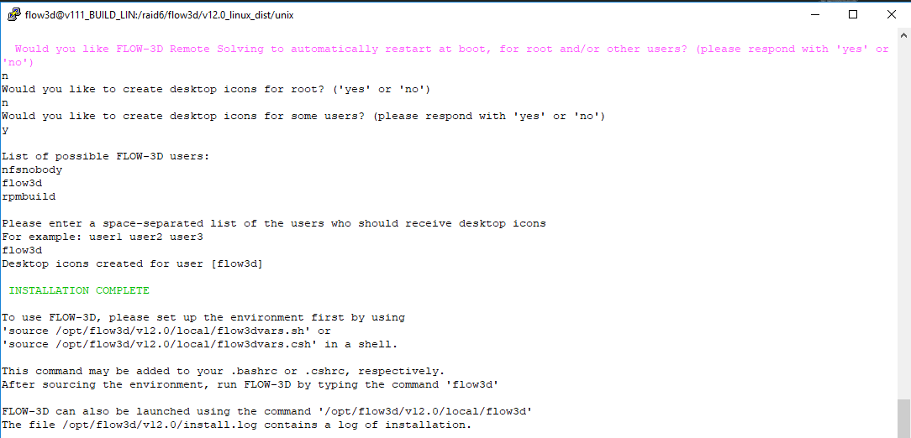

Installation¶
This chapter provides detailed instructions for installing FLOW-3D , configuring software licensing, and setting up the remote solving features. For any trouble during the installation, please contact our support department at support@flow3d.com or by calling (505) 982-0088 and we will be happy to assist.
Computer Setup¶
Supported Operating Systems¶
There are certain operating systems on which FLOW-3D and FlowSight are tested. While it may be possible to install and run these programs on other operating systems, Flow Science supports and provides installation assistance for only the following 64 bit operating systems:
- Microsoft Windows 7 SP1 and greater
- Microsoft Windows Server 2008 R2 SP1 and greater
- Red Hat Enterprise Linux 6 and greater
- SUSE Linux Enterprise 12 (Remote Solving is not available on this platform)
Note
- Other Linux distributions (e.g. Fedora, Scientific Linux, Debian, Ubuntu) may be compatible, but are not supported.
Hardware Requirements and Recommendations¶
Some general recommendations on hardware selection for running FLOW-3D are listed below.
Processor: An x86-64 compatible CPU is required. Multiple core CPUs, particularly Intel Core i7, Intel Core i9, and Intel Xeon, are strongly recommended. AMD Ryzen and Epyc CPUs are compatible.
Memory: The software requires a minimum of 2GB RAM per processor core; 4GB per core is recommended. Note that the amount of RAM required is highly problem dependent. For simulations with large domains, or with complex geometry requiring fine resolution, significantly more RAM than the minimum requirement will be necessary.
Note
At least 64GB of RAM, and preferably 128GB, is highly useful for post-processing with FlowSight.
Hard drive: Fast, high-capacity hard drives are recommended. SSD drives improve performance.
- The Windows installation requires at least 2.2GB of free disk space.
- The Linux installation requires least 2.5GB of free disk space.
- Additional space is required for simulation results which are commonly on the order of 10GB in size, though exceptionally large results files can be larger than 1TB.
Graphics: nVidia Quadro cards are highly recommended, and are required for Windows machines which will be accessed remotely. nVidia’s GTX series has shown decent performance on desktop and notebook machines but is not recommended for remote visualization.
Warning
Certain graphics implementations are blacklisted and will result in degraded graphics and/or unreliable performance. The following OpenGL renderers are neither recommended nor supported:
- Intel integrated graphics
- GDI Generic: This is the Windows default renderer when FLOW-3D is opened via Remote Desktop Connection.
- Mesa: This is a common default implementation for Linux machines.
- Gallium: This is a common default implementation for Linux machines.
Note
We are aware of an issue with some Dell workstations where Dell’s backup application conflicts with the Qt toolkit Flow Science uses to build its user interface. The bug is confirmed on your system if you go to the File menu, select Add Existing Simulation and the GUI crashes. The resolution is described in the notification on the FLOW-3D User’s Site here.
Virtual machines¶
While FLOW-3D can be used on virtual machines, such as VMWare Workstation, Microsoft Hyper-V, VMWare ESXi, and Oracle VirtualBox, there are varying levels of functionality available with these platforms.
- The FlexLM license server runs well on virtual machines. Both lmgrd and lmadmin have been tested on these platforms. When using a dongle, it is necessary to pass USB through from the physical machine to the virtual machine.
- The FLOW-3D CFD solver may be run on virtual platforms from the command line. Scripts and tools are included in the software distribution for command line solver use. However, performance will be lower than when running directly on the hardware.
- Due to graphics limitations on virtual machines, the graphical user interface will lose some functionality and may perform poorly or not at all.
- Similarly, the FlowSight post-processor will lose some functionality and may either perform poorly or not at all.
Remote Visualization for Setup and Post-processing¶
It is increasingly common to use graphical programs on remote hardware. This is usually done for simulation setup using the FLOW-3D graphical user interface and for post-processing simulation results using either the Analyze tab in FLOW-3D or the dedicated FlowSight post-processor. Doing so requires certain combinations of hardware and software.
Windows computers include built-in remote visualization tools; these include a terminal services server, a special protocol for connections, and a client commonly known as Remote Desktop. These tools can be used when connecting a Windows host machine to a Windows client. Please see Remote Desktop for hardware and software recommendations.
Our recommendations when using a Linux host machine are to use an nVidia Quadro graphics card which supports the newest available proprietary nVidia driver and Nice Software DCV. This software consists of a server that runs on the host machine and a modified RealVNC client that runs on the guest machine. OpenGL is rendered on the host machine’s physical hardware. Nice Software DCV performs well on low-bandwidth network connections, such as a VPN. Penguin Computing’s Scyld Cloud Workstation software is another option for remote visualization on Linux systems.
Warning
- The free software VirtualGL suite is known to have display issues.
- Intel integrated graphics and motherboard graphics cards will perform poorly or not at all for remote visualization.
Settings¶
There are a few basic configuration settings that should be followed with FLOW-3D :
- It is strongly recommended that all input files be stored in a local directory on the machine instead of a network location. The solver will run faster, the GUI will be more responsive, and the possibility of a network problem interfering with a running simulation is eliminated.
- Ensure that the power settings for the machine are set so that it does not sleep, hibernate, or turn off after some period of inactivity. Failure to do this can result in the computer sleeping (or hibernating, etc.) during long simulations.
- Where possible, it is recommended that Windows updates be configured to be installed after checking with the user. This will prevent update-related reboots while simulations are running.
- Using automatic file compression utilities is not recommended.
Additionally, there are some optional configuration settings that can affect the performance of the solver for certain problems and hardware configurations. There is no guarantee that these will make the solver run faster and they could make it run slower, so use them with caution. Due to the unreliable effect on performance these optional settings are considered compatible but are not supported.
- The
KMP_AFFINITYenvironment variable gives users access to Intel’s Thread Affinity Interface, which controls how OpenMP threads are bound to physical processors. Setting this variable toscattercan sometimes improves the performance of the solver. - Disabling Intel Hyper-threading can sometimes improve the solver performance. Similarly, limiting the number of processors used by the solver to the number of physical processors on the machine can help when Hyper-threading is enabled.
Licensing Information¶
Licensing Requirements¶
Please ensure that you have a valid FLOW-3D license file or the name or IP address of your FLOW-3D license server before beginning the installation. If you do not have a license file or a license server please contact a sales engineer or licenses@flow3d.com and provide the following information:
- The host name of the machine that will run the license server software
- Either the FlexID (if using a hardware dongle; the FlexID is printed on the side of the dongle) or the MAC address of the machine
If the MAC address is not known:
- On Windows operating systems, the host name and MAC address can be
found by opening the command prompt and entering
ipconfig /all. When multiple network interfaces are present, multiple MAC addresses may be listed in the output. The connected ethernet device or the first in the series is preferable. Virtual adapter addresses should not be chosen. - On Linux operating systems, typing
/sbin/ifconfigin a terminal window will provide the MAC address, under the headingHWAddr. The host name can be found by entering thehostnamecommand in a terminal window. When multiple network interfaces are present, multiple MAC addresses may be listed in the output.eth0is usually best, but if you are unsure which MAC address to use, please send a text file or attach a screen capture with the output of the command, and the License Administrator will determine the best option.
Once the host name and MAC address or FLEXID have been received, the License
Administrator at Flow Science will send the license file (flow3d.lic)
as an email attachment. It is an ASCII text file with encryption codes that
allow it to be used only on the computer or dongle for which it was generated. Check the
license file to be sure that it contains the host name and HOSTID that matches
the license server. More information about licensing can be found in the
following sections on FlexNet License Administration Tools and Licensing Terminology.
FlexNet License Administration Tools¶
FLOW-3D uses the licensing package FlexNet Publisher, by Flexera Software. FlexNet enables FLOW-3D licenses to be shared across a network.
Flexera Software provides utilities for users or local license administrators
to manage FlexNet licensing activities. The FlexNet End User Manual is
available in the utilities subdirectory of the FLOW-3D installation in both
PDF and HTML formats. For Windows computers, the program
lmtools.exe is provided with all installations. With
LMTOOLS, users can start, stop and configure FlexNet license
servers, get system information, get server information, and more. For more
information, please see Chapter 12 of FlexNet End User Manual.
On Windows computers, the license manager daemon lmgrd will
restart automatically whenever the computer is rebooted. On Linux computers,
however, the license manager must be started each time the computer is
rebooted. To have the license manager start automatically on Linux requires
editing the appropriate boot script and inserting the appropriate startup
commands. See Section 6.2 of the FlexNet End User Manual for more information.
A summary of commonly used administration tools on Linux is included here.
Full descriptions of these and other available utilities can be found in
Chapter 12 of the FlexNet manual.
- lmdiag - diagnoses license checkout problems
Useful debugging command:
lmutil lmdiag -n -c "full_license_file_path" - lmdown - gracefully shuts down all license daemons on the license server node.
- lmgrd - the main daemon program for FlexNet
- lmhostid - reports the HOSTID of a system
- lmreread - causes the license daemon to reread the license file and start any new vendor daemons
- lmstat - helps monitor the status of all network licensing activities
Useful debugging command:
lmutil lmstat -a -c "full_license_file_path" - lmver - reports the FlexNet version of a library or binary file
Note
- Using
kill -9to to shut down the license server on Linux computers is not recommended. Instead, use eitherlmdownor use thekillcommand without the “-9” parameter. - The lmgrd license server is now supported on Red Hat Enterprise Linux 7
Licensing Terminology¶
Definition of Client and License Server: Any computer running FLOW-3D is referred to as a “client.” The computer on which the FlexNet license server is installed will be referred to as the “license server.” The client and server may be (and often are) the same machine.
Software Package and Software Distribution: The terms “software package” and “software distribution” will be used to refer to the directory structure containing all of the data files and executables needed to run FLOW-3D on a particular computer.
License Files and Servers: A valid license file from Flow Science is required to use FLOW-3D . This license file will be sent as an email attachment from Flow Science’s License Administrator at licenses@flow3d.com. This license file must be saved in the licenses directory of the FLOW-3D installation on the machine that will act as the license server. More detail about this is given in the Windows Installation and Linux Installation sections below.
As discussed in Floating vs. Node-Locked Licenses, FLOW-3D can be used on multiple computers, but one computer must be selected to be the license server. If the computer chosen to be the license server will not actually be used to run FLOW-3D , then only the FlexNet license server needs to be installed on that machine. Most often, a licensing dongle that attaches to the USB port of the computer will be provided by Flow Science.
Tokens¶
The total number of FLOW-3D solver processes that can be run concurrently is determined by the number of “tokens” contained in the license file. The number of tokens available depends on how many were purchased. The license server checks tokens out to client computers on the network, and then checks them back in when the application has completed. In this process, tokens are counted by the license server and when all of the tokens purchased have been checked out, no more tokens can be checked out until a token which is in use has been checked in.
There are several different types of solver tokens. The most important distinction is between “serial” solver tokens and “parallel” solver tokens. Flow Science offers multi-processor versions of FLOW-3D for both shared-memory (SMP) and distributed-memory (cluster) environments. A shared memory parallel solver token enables FLOW-3D simulations to use more than one processor on a multiprocessor computer.
The total number of FLOW-3D solver processes that can be run concurrently is determined by the number of “instance tokens” contained in the license file. Along with the instance tokens, core tokens are also checked out to enable that particular instance of the solver to run on multiple CPU cores. It is the combination of an instance token plus core tokens that enables a simulation to run.
The license server checks tokens out to client computers on the network, and then checks them back in when the application has completed. In this process, tokens are counted by the license server and when all of the tokens have been checked out, no more tokens can be checked out until a token which is in use has been checked in.
There are essentially an unlimited number of tokens available to run FLOW-3D ’s
auxiliary programs such as the preprocessor, the postprocessor, and the
various visualization options. The exception is for FlowSight, where two
flowsight tokens are provided for each FLOW-3D instance token.
Floating vs. Node-Locked Licenses¶
There are two general types of licenses used to enable FLOW-3D : “floating” and “node-locked.” A floating license is the most common type of license and is available to any computer on the network. Flow Science can also provide a node-locked license. Node-locked licenses can only be used on the designated computer.
Both floating and node-locked licensing schemes require that one computer be designated as the license server.
Floating Licenses: To use floating licenses, it is important that both the network and the computer intended for use as the license server are reliable. The TCP/IP protocol must be loaded and functional, and all intended clients must be able to access the license server. Floating licenses may also be accessed through a VPN tunnel. The computer that is acting as the license server may be any computer on the network, and does not need to have FLOW-3D installed. The license server may be a Windows or a Linux computer. Users may load FLOW-3D on any client running a supported Linux or Windows computer on the network. A hardware key is not needed on a client computer unless it uses a node-locked license.
To employ a floating license on a single computer, FLOW-3D should be installed with the client/server option. The license server and the clients may reside on the same local area network, over a WAN, or across VPN. FLOW-3D must be installed locally on each client. An example of a floating license configuration is shown below.
Node-Locked Licenses: Users may choose to have their solver tokens locked to a particular computer so that only that computer can run the solver.
Both floating and node-locked licensing schemes have their advantages and disadvantages. A floating license is advised if several people are sharing a license, or it may be necessary to run FLOW-3D on a different computer if a particular computer is busy. With a floating license, a problem can be set up on one computer while using another to run the FLOW-3D solver on a second problem. If other machines or problems are using all available tokens, the solver will not run until a token becomes available. The main advantage of a node-locked license is the ability to ensure that token(s) are always available to a specific machine and not available to others on the network.
Note
All licenses are floating licenses unless specifically requested as node-locked.
License Token Checkout Order¶
When FLOW-3D attempts to check out a license token, FLEXlm finds the server by trying the following (in order):
- Environment variable
F3DTKNUX_LICENSE_FILE - Registry value
F3DTKNUX_LICENSE_FILE(Windows operating systems) - Reads the license file directly (
%F3D_HOME%\licenses\flow3d.lic)
FLOW-3D is looking for the server, not necessarily the file. If the server is found, the local license file may not be read. However, if the server is not found, the license file is read as follows:
- The
SERVERline is read to find the location of the server. - The
VENDORline is read to find the name of the vendor daemon. - If the third line is
USE SERVER, the rest of the file is skipped and the server is contacted directly.
USE SERVER is recommended as it improves performance when a license server is used. It also avoids a problem that may occur, where the license server is updated but local license files are not updated.
Procedure¶
Windows Installation¶
Standard Installation¶
Note
- Administrator privileges are necessary to install FLOW-3D on Windows. Before installing, please close all other running programs.
- If installing on Windows 8, please consult Windows 8 and 8.1.
- Third-party security software or firewalls, such as Norton 360, may interfere with license checkout and/or remote server operation. When using such software, temporarily disabling it and testing the license checkout is recommended. If the security software appears to be the issue, please consult the software vendor for the correct procedure to allow lmgrd.exe and F3DTKNUX.exe access through the firewall, or open the ports needed for proper operation. These ports are listed in the licensing documentation below.
- If installing on a machine that has an earlier FLOW-3D version installed, please close
any running copies of RunnerServer.exe. This can be done by either:
- Right-clicking the green “running person” icon in the system tray, choosing Open, and choosing Terminate.
- Opening the Windows Task Manager and stopping any
RunnerServer.exeprocesses shown in the Processes tab. It may be necessary to click the Show Processes from All Users button to find theRunnerServer.exeprocess.
The installation can be started by double clicking the downloaded flow3d_v12.0.exe file.
On Windows operating systems, a User Account Control dialog, similar to the one below, will appear. The “Verified publisher” entry should confirm that the executable has been digitally signed by Flow Science, Inc.
Next, the Preparing to Install dialog will be displayed. It requires no user input and will disappear after several seconds.
The next dialog to appear is the Welcome screen. Click Next to continue.
The next dialog is the FLOW-3D end user license agreement. Please read it carefully. If all the terms are acceptable, click the Next button to signify agreement and move to the next dialog.
Now the install location can be chosen. The default directory can be used, or FLOW-3D can be installed to a specific directory. Once the location is chosen, click Next.
Note
When installing to a location other than the default, it is important that the directory name not contain spaces, ampersand or other special characters, or multiple dots.
The available features are shown. Individual features may be selected for installation by checking the appropriate box. If this machine will connect to a remote license server, License Server should be unchecked. This is equivalent to the installation in older FLOW-3D versions.
Note
- The License Server option is selected by default.
- For this version, it is necessary to install the new license server. This version requires the new license server executable F3DTKNUX.exe. This server is backward-compatible with prior versions of FLOW-3D .
- If this machine is intended to act as a remote server with the Remote Solving feature (see Remote Solving Setup), FLOW-3D should be checked.
If the License Server option was not selected, this dialog will be shown. It allows an IPv4 address, a server name, or a port@host to be specified for the license server. If unknown, the IP address can be found by opening the command prompt and entering
ipconfig /allon the license server machine. The name can be determined by opening a command prompt or terminal window and issuing the commandhostname.Note
When using a hostname, the server should respond to
pingrequests. The name required may differ based on the network. For example, a machine may respond toping host.company.combut not toping host. If this is the case, the full name must be used. If the hostname entered is not reachable, the client will not function.The next dialog is only shown if the FLOW-3D feature is being installed. It allows the RSS feed connection to be bypassed. Leaving the box unchecked allows the FLOW-3D user interface to make an encrypted TLS connection to the FLOW-3D website, displaying news and information useful to users. Opting out by checking the box disables this functionality. This secure, encrypted connection may contravene local laws.
FLOW-3D is now ready to install.
The FLOW-3D installer will copy the necessary files.
If the license server is being installed, FLOW-3D will ask to temporarily shut down any existing license servers. This allows the FLOW-3D license as well as FlexLM licenses from other vendors to be served. This can only be skipped safely when no other software that uses FlexLM licensing is installed, including older versions of FLOW-3D .
Also, if the license server component is being installed, the drivers for the USB dongle will be installed.
Next, the installer will create firewall exceptions to allow communication to remote license servers and for remote solving.

Finally, the Microsoft Visual C++ redistributables will be installed.

The installation is now complete.
After installation, an opportunity is presented to learn about new features in this version.
The FLOW-3D and FlowSight (if installed) icons will now appear on the desktop.
Also, there will be a new Program Group in the Windows Start Menu. It includes tools and viewers appropriate to the features that were installed.
Special considerations¶
Windows 8 and 8.1¶
Flow Science highly recommends updating Windows 8 to version 8.1 Update 1 (or the newest version available) before installing FLOW-3D .
- On all versions of the Windows 8 operating system, including those
which have been updated, the following considerations apply:
- Secure boot must be temporarily disabled for the Sentinel HASP USB drivers to install. Please see http://technet.microsoft.com/en-us/library/dn481258.aspx for the procedure.
- The “Creating Firewall Exceptions” dialog may not be shown. However, the firewall exceptions are created.
- When the Windows 8 operating system has not been updated, the
desktop icons are not created by the installer automatically.
- One potential solution is to install a third-party Start Menu replacement, such as Classic Shell or Start8. If a Start Menu replacement is installed prior to installing FLOW-3D , the icons will be created correctly.
- Another option is to use the Modern interface All Apps view. This
can be done by:
- Right-clicking the Start Screen, then clicking All Apps at the lower right.
- There will be a Program Group for FLOW-3D .
- Right-click one of the icons and choose Pin to Start at the lower left to place the icon on the main Start Screen.
- The icon should now appear on the main Start Screen and can be used to launch the program.
Remote Desktop¶
Flow Science highly recommends nVidia Quadro K, M, or P series graphics hardware with nVidia driver version 341.05 or newer. With this combination of card and driver, remote desktop connections automatically run on the native hardware with full 3D acceleration.
When connecting to a remote desktop session, Windows uses software rendering unless an nVidia Quadro graphics card is installed. This impacts performance negatively for both FLOW-3D and FlowSight. To determine whether FLOW-3D is using software rendering, choose About from the FLOW-3D Help menu. The entry for GL_RENDERER will show GDI Generic if software rendering is being used.
If software rendering is being used, there are several options to enable hardware rendering. One easy option is to start FLOW-3D from the physical console, then connect the remote desktop session. Some VNC software, such as Nice Software DCV, uses hardware rendering by default. Finally, the TSCON command can be added to the batch file used to launch FLOW-3D to temporarily pass control back to the console session.
To use TSCON, determine which session is connected. This can be
determined using a query. Click the Start button and type cmd in
the box labeled Search programs and files. Click cmd.exe
when it appears at the top of this window to open a command prompt.
At the prompt, type query session to receive a list of sessions. The relevant remote desktop session will be listed with a greater than symbol to its left and show the username with which you logged in. In this example, user dev is connected with a session ID of 1.
To connect session 1 (for example) to the console, add tscon 1
/dest:console to the beginning of the FLOW-3D launch batch file (replace 1 with
your session ID). To edit the batch file, right-click the FLOW-3D desktop icon
and choose Edit or navigate to %F3D_HOME%\local, right-
click flow3d.bat and choose Edit. In the resulting notepad
window, the line can be added. It should be placed before all other lines in
the file.

After editing the file, save it and launch FLOW-3D . The remote desktop session will be ended, and when reconnected, the hardware renderer should now be shown in the About menu.
- There are a few potential problems with this approach:
- The TSCON command must be run as administrator. If Error 5 occurs, right-click the FLOW-3D desktop icon and choose Run as Administrator.
- The host machine must have a supported graphics card. See Hardware Requirements and Recommendations
- Due to the graphics hardware requirement, this will not work for virtual machines.
- The user must have an open console session. This may not work after a reboot and is known not to work when another user is logged into the console session.
Multi-User Machines¶
Windows Server or Linux operating systems are recommended if it is desired that multiple users be able to run FLOW-3D simulations simultaneously.
Linux Installation¶
Standard Installation¶
FLOW-3D for Linux is distributed as a gzip-compressed tar archive, often called a
tarball. The installation files can be extracted from flow3d_v12.0.tar.gz in a
terminal window, using the command tar -xzvf flow3d_v12.0.tar.gz. The
tarball can be unpacked into any directory on the file system using the -C
flag. For example, to extract the tarball to /home/user, use tar -xzvf flow3d_v12.0.tar.gz -C /home/user.
cd to the directory where the installation files exist, or to which they
have been unpacked, and run the script install-flow3d.sh. A preceding
dotslash may be necessary depending on whether the current directory is on the
system PATH (i.e., ./install-flow3d.sh). By default, this file is executable.
FLOW-3D is only supported on 64-bit Red Hat Enterprise Linux 6 or greater or SUSE 12. It may be
possible to install on other distributions, but due to potential library and
package differences, Flow Science does not provide technical assistance on
these distributions.
Note
- The FlowSight visualization software requires
libstdc++.so.5. This may be installed on RHEL6 or RHEL7 using the commandyum install compat-libstdc++-33. Installing this package on SUSE12 requires that the 64-bit Legacy Module 12 be enabled. This requires logging into the SUSE customer center and enabling the repository, or downloading the module directly. After the module is enabled, install the library usingzypper in libstdc++33. - The installation script must be run as root
- The default installation directory is
/opt/flow3d/v12.0
Having the Linux Standard Base package installed allows the script to work best. It is also needed by the FLOW-3D RPM. This can be installed using the commands below.
- RHEL6:
yum install lsb - RHEL7:
yum install redhat-lsb - SUSE12:
zypper in lsb-release
- RHEL6:
Execute the install script in the directory where the tarball was unpacked. For example, if viewing that directory, use the command
./install-flow3d.shThe license agreement can be read prior to installing the software.If all the terms are acceptable, typing
yoryesand pressing Enter will continue the installation.FLOW-3D can be installed to a directory of your choosing. The default is
/opt/flow3d/v12.0. Press Enter to use the default. To change the installation directory, enter a PATH here and press Enter.Note
This is the full PATH where the installation will be placed. For example, if the PATH
/optwere chosen, the FLOW-3D installation would be installed directly to/opt.After the directory has been determined, an installation type may be chosen.
Note
If this machine is intended to act as a remote server with the Remote Solving feature (see Remote Solving Setup), an installation type that includes FLOW-3D should be chosen.
If an installation type including FLOW-3D was chosen, the next question allows the RSS feed connection to be bypassed. Leaving the box unchecked allows the FLOW-3D user interface to make an encrypted TLS connection to the FLOW-3D website, displaying news and information useful to users. To disable this functionality, answer ‘y’ or ‘yes’ to opt out. This secure, encrypted connection may contravene local laws.
Next, the script will display an installation summary, and request the name or IPv4 address of the license server. This server machine must be accessible by the client. Unless networking is configured otherwise,
ping hostnameorping (ip_address)will verify whether the machine can be reached.Note
If a license server will be installed locally on this machine use
127.0.0.1The installation script will now install the RPMs that are needed for the selected Installation Type. It will also write all the scripts needed to run the installed software.
Next, users can be set up for Remote Solving. Choosing a user here writes a script for sysVinit or systemd to run at boot time for the selected user. This script restarts the Remote Solving daemon process when the computer is rebooted. If this behavior is not needed, this option is not necessary.
Finally, the install script allows the creation of desktop icons for root and/or users. Icons may be created for a list of users. List the users with a space between each username, as in the example.
The installation will now complete.
Shell scripts, named
flow3dvars.shandflow3dvars.csh, have been written into the local directory of the installation path. The install script will write the full path to these files to both stdout and theinstall.logfile. If FlowSight was chosen,FlowSight.shandFlowSight.cshhave been written in the local directory. Again, the script will give full information.Necessary libraries are included with the distribution in the
$F3D_HOME/gui/libdirectory. TheLD_LIBRARY_PATHenvironment variable is set in theflow3dvarsscripts so any libraries not found on the system will be accessible.The install script also shows the
sourcecommand that can be used to set up an environment to run FLOW-3D . The command may be added to the user’s.bashrcor.cshrcfile, if desired. FLOW-3D can then be run from a terminal prompt using the commandflow3d&. Alternately, FLOW-3D may be launched using the shell script in the local directory, or using the desktop icon (if created).After installation, the installation directory will contain a directory structure similar to the one shown. A log of the installation, named
install.logwill be at the top level, and the scripts created by the installer will be in thelocaldirectory.Note
On SUSE12, the installer will remove the Remote Solving functionality automatically.
The
flow3dvars.shfile illustrates the environment variables that should be set to successfully run FLOW-3D . After using the source command, use the command flow3d to run FLOW-3D .
Linux License Server: lmgrd¶
Installation¶
For FLOW-3D v12.0, the lmgrd license server has returned. This server and the F3DTKNUX vendor daemon are now compatible with Consistent Network Device Naming as introduced in Red Hat Enterprise Linux 7. There are important security fixes in the versions included and it is highly recommended to use them.
Warning
Older versions of lmgrd and F3DTKNUX are NOT compatible with this version, while older FLOW-3D versions DO work with the new license server executables.
Note
The lmadmin license server is no longer included for Linux.
The necessary executables are included at $F3D_HOME/licenses, where $F3D_HOME is the PATH chosen during installation. By default, $F3D_HOME is
/opt/flow3d/v12.0Open the necessary firewall ports for the license server. lmgrd uses TCP ports 27000 through 27009 by default, but this is configurable by editing the license file. Whatever port you choose, open that port and the next nine. So, for example, if you choose port 28000, open ports 28000 through 28009. Typically, Red Hat 6 uses iptables, while Red Hat 7 and SUSE 12 use firewalld. The commands to open ports differ between these firewalls.
iptables: iptables -A INPUT -p tcp --dport 27000:27009 -j ACCEPT
firewalld: firewall-cmd --permanent --add-port=27000-27009/tcp
Open the necessary firewall ports for the F3DTKNUX vendor daemon. It only needs a single port, which can be determined by starting the license server and checking the log file, or by adding a line to the license file as the second line (under the first line, which starts with SERVER). The default port is 49183 – it can be added using the same command as above.
SERVER (server_name_or_ip) (flexid or host id) (optional port setting for lmgrd as a number)
VENDOR F3DTKNUX port=49183
So, for example, to run lmgrd on ports 28000 through 28009, and F3DTKNUX on port 49183:
SERVER licenses.flow3d.com FLEXID=9-12345678 28000
VENDOR F3DTKNUX port=49183
After opening the ports, restart the firewall service or reload the configuration to apply changes.
service iptables restart
firewall-cmd --reload
It is recommended to run the license server as a user, rather than as root. The location of the log file should be a PATH where this user may write. Here is the command to start the server:
/path/to/flow3d/licenses/lmgrd -c /path/to/flow3d.lic -l /path/to/log/file.log
For example, with the defaults:
/opt/flow3d/v12.0/licenses/lmgrd -c /opt/flow3d/v12.0/licenses/flow3d/lic -l /home/(username)/flow3d.log
The log file may then be examined to determine that the server started correctly, or, if there any problems, what the problems may be.
HASP USB dongle driver¶
Sentinel has released a HASP USB dongle driver that is compatible with all supported Linux distributions. Linux users may now receive a USB dongle. When this occurs, the driver should be installed.
Note
This driver should be installed before the license server is started.
The driver is included in the FLOW-3D installation tarball in the HASP_driver directory. Change to this directory using the cd command.
The HASP driver includes 32-bit executables and libraries, and requires a 32-bit glibc package. This can be installed using the command yum install glibc.i686
No other dependencies should be needed. This can be verified by using the command rpm -qpR aksusbd-2.5-1.i386.rpm
Assuming all dependencies are installed, the package may be installed using rpm -i aksusbd-2.5-1.i386.rpm
Finally, the FlexLM HASP library libhasp_linux_x86_64.so should be copied to /usr/lib, using cp libhasp_linux_x86_64.so /usr/lib
The HASP USB driver is now installed and the dongle may be connected. Verify that the light turns on on the USB dongle.
FLOW-3D and TruVOF are registered trademarks in the USA and other countries.